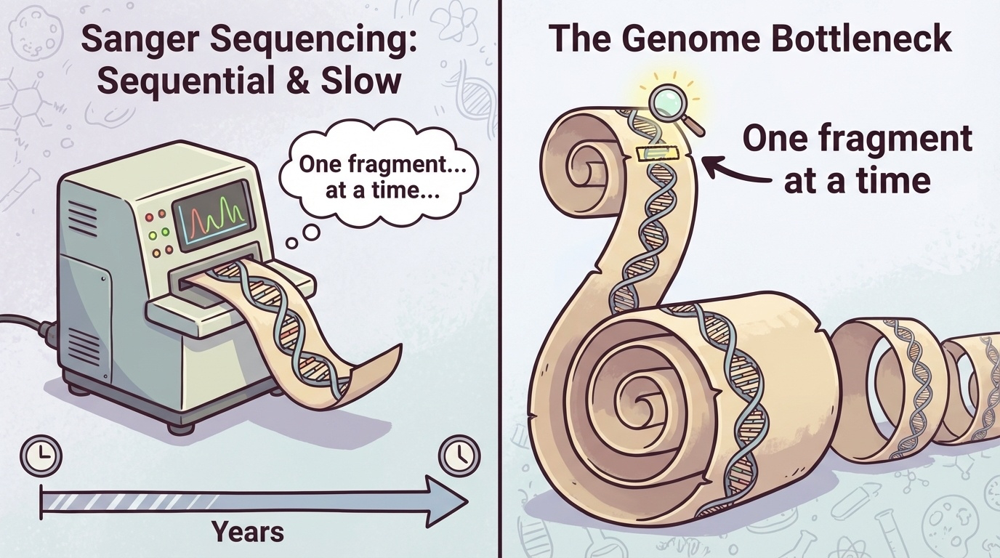
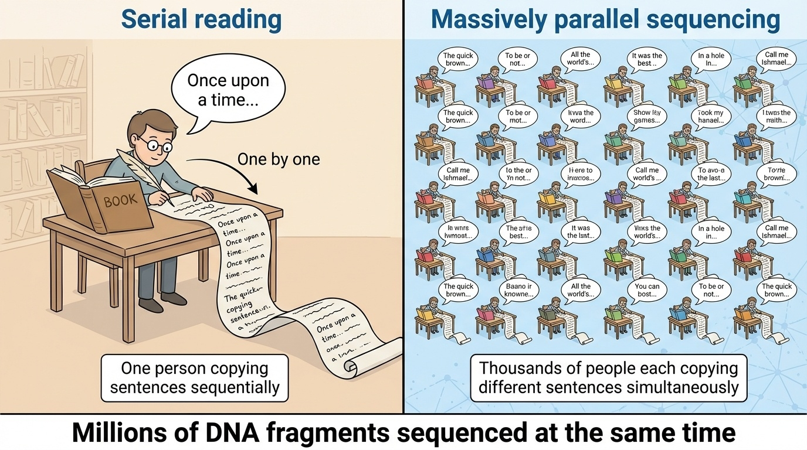
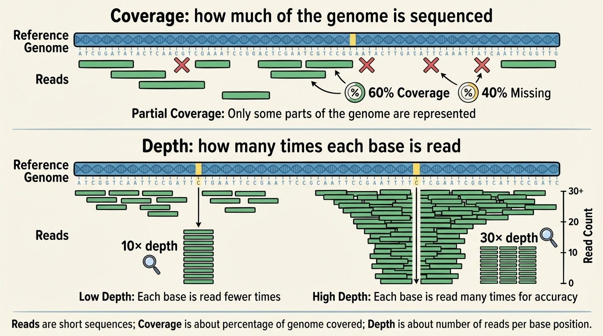
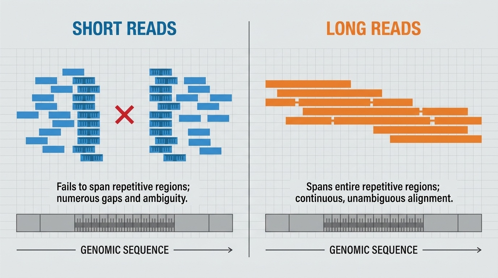

BSMS205 · Genetics
Next-Generation
Chapter 5 · Part I · The Human Genome
Welcome back to BSMS two oh five. Last time we looked at the pangenome — how a single reference genome was never enough to capture human diversity, and how dozens of genomes from around the world give us a fuller picture. But here is the obvious question that chapter four left hanging. To build all those genomes — forty-seven of them, and counting — we needed a sequencing revolution. We needed to sequence cheaply, quickly, and at massive scale. Today's lecture is about that revolution. It is called next-generation sequencing, or NGS, and it is what made every modern genomics project possible.
A question to start with
How do you readDNA ?
Here is the question I want you to hold for the next sixty minutes. How do you actually read three billion letters of DNA — A, T, G, and C — for one person? And then how do you do it for a thousand people? A million people? Because that is the scale modern genetics works at. The Human Genome Project read three billion letters once and it took thirteen years and three hundred million dollars. Today, we read three billion letters per person, in a single afternoon, for under a thousand dollars. How did that happen? That is what we are going to unpack.
From Chapter 4 to here
Pangenome needed 47+ genomes from diverse populations
Each one assembled to T2T-quality
That is impossible at $300 million per genome
The pangenome presupposes cheap sequencing
No NGS · no pangenome · no modern genetics.
Let's connect this to chapter four for a moment. The pangenome consortium needs forty-seven genomes from diverse populations, each assembled to telomere-to-telomere quality. Even if you could afford one genome at three hundred million dollars, you could not afford forty-seven. The pangenome project, the T2T project, the one thousand genomes project — every modern large-scale genomics effort presupposes that sequencing is cheap. Without next-generation sequencing, all of those projects would still be impossible thought experiments. So in a real sense, NGS is the substrate underneath everything we have discussed so far.
The audacious claim
500,000×
cost reduction in just over a decade
2003: $300 million per genome
2014: $1,000 per genome
Today: under $600 per genome
Let me put one number on the slide that should make you stop and think. Five hundred thousand times. That is how much sequencing costs dropped in the two decades after the Human Genome Project. Three hundred million dollars in two thousand three. One thousand dollars by twenty fourteen. Under six hundred dollars today. That kind of cost reduction is unheard of in any technology. It is faster than computers got cheaper. Faster than solar got cheaper. It is the steepest cost curve in the history of biology, and arguably one of the steepest in the history of any technology. Let's understand how it happened.
Roadmap for today
The Sanger bottleneck · why we needed something new
The NGS idea · massive parallelization
Key concepts · reads, coverage, depth, quality
Illumina · the short-read workhorse
PacBio & Nanopore · long reads
The cost crash · economics of sequencing
Summary & what comes next
Here is where we are headed. First, the Sanger bottleneck — why the technology that finished the Human Genome Project could not scale up. Second, the core idea of NGS, which is one beautifully simple concept: do millions of things at once. Third, the vocabulary you will need — reads, coverage, depth, quality scores. Fourth, Illumina, the dominant short-read platform that handles most clinical and research sequencing today. Fifth, the long-read technologies — PacBio and Oxford Nanopore — and why long reads matter. Sixth, the economics, the famous cost-per-genome curve. And finally a wrap-up.
§ 1
The Sanger
Let's start with what came before NGS. Sanger sequencing — the method that finished the Human Genome Project. It is accurate, it is reliable, and it is fundamentally serial. That serialness is what makes it a bottleneck. Understanding the bottleneck is the key to understanding why NGS was so transformative.
Sanger · the gold standard
Developed in the 1970s by Frederick Sanger
Sanger's second Nobel Prize
Error rate < 0.1% · extremely accurate
Reads one fragment at a time · serial
Sanger sequencing was developed in the nineteen seventies by Frederick Sanger, and it earned him his second Nobel Prize. It is, even today, an extraordinarily accurate method — error rates well under zero point one percent. That is why it is still used in clinical labs to confirm important variants. But it has one feature that turned out to be its undoing for large-scale genomics. It reads one DNA fragment at a time. One fragment. Then the next. Then the next. It is fundamentally a serial process.
The transcription analogy
Imagine transcribing a million booksone sentence at a time .
That is Sanger sequencing for the genome
3 billion letters · one fragment at a time
Even hundreds of machines running 24/7 · years
Here is the analogy I always come back to. Imagine you have to transcribe a million books, but the rule is — you can only read and copy one sentence at a time before moving on. You cannot have many people working in parallel. Just one sentence, one machine, one at a time. That is what Sanger sequencing does to the genome. Three billion letters, one fragment at a time. Even when the Human Genome Project ran hundreds of sequencing machines simultaneously, twenty-four hours a day, it took years to crawl through three billion bases. The serialness was the bottleneck.
The bottleneck, visualized

Figure 1. Sanger sequencing processes DNA fragments sequentially, one at a time. Reading a whole genome means reading billions of fragments in series — extremely slow and expensive at scale.
Here is the bottleneck in one picture. Each fragment goes into the machine, gets read, and then the next one comes in. The fragments move through a single, narrow pipe. For a single gene, that is fine. For a whole genome, you are reading billions of fragments in series, and the time and cost just stack up. The HGP managed to do it once. But the moment you wanted to sequence a second person — let alone thousands of people — the bottleneck became prohibitive. Something had to give.
What the field needed
Sequence not just one genome but thousands
Compare healthy vs sick · find disease variants
Study variation across populations
Diagnose patients in days , not decades
At $300M per genome · this was a fantasy.
After the HGP finished, the genomics community looked around and realized that one reference genome was just the beginning. To make sense of human disease, you need to compare genomes from thousands of healthy and sick people. To understand evolution and migration, you need to sequence genomes across populations. To use genetics in the clinic, you need to sequence patients in days, not decades. None of that was possible at three hundred million dollars a genome. It would not even have been possible at three million. The field needed something fundamentally different — faster, cheaper, more parallel. That something turned out to be NGS.
§ 2
The NGS Idea
Now the fun part. The core idea of NGS — what makes it next-generation — is honestly one of the simplest ideas in technology. It is just one word. Parallelism. Instead of reading one fragment at a time, read millions of fragments at the same time. That is it. Let's see what this looks like.
One simple change
Sanger
One fragment at a time
Serial · slow
Years per genome
NGS
Millions at a timeParallel · fast
Days per genome
Same chemistry idea — radically different scale .
Here is the contrast in one slide. On the left, Sanger — one fragment at a time, serial, years per genome. On the right, NGS — millions of fragments at a time, parallel, days per genome. The chemistry inside each method is different, but the conceptual leap is just this one thing: do many things at once. The same shift that turned mainframe computing into multi-core processors. The same shift that turned single-lane roads into highways. Take a serial process and make it parallel and the world changes.
The book analogy returns
One person copying sentences sequentiallya million people , each on a different sentence.
Years collapse into days
Same total work · totally different time
That is the NGS bet
Let me bring back the transcription analogy. Sanger sequencing was one person copying a book one sentence at a time. NGS is a million people each copying a different sentence at the same time. The total amount of work is roughly the same — millions of sentences still need to be copied — but the time it takes collapses from years to days. That is what parallelism buys you. It is not magic, it is throughput. And throughput is what genomics needed.
Massive parallelism, visualized

Figure 2. Sanger sequences one fragment at a time. NGS sequences millions of fragments simultaneously. The same chemistry idea, scaled by parallelism, dropped sequencing time from years to days.
Here is the textbook figure that captures the idea. On the Sanger side, you see fragments queuing up to go through one machine. On the NGS side, you see a flow cell — a flat surface — covered in millions of separate spots, each one running its own little sequencing reaction at the same time. By the time the camera takes a picture, every spot has advanced one base. Multiply that by millions of spots and hundreds of cycles, and you have generated billions of bases of sequence in a single run.
From idea to industry · 2007 onwards
2007 · first NGS platforms commercially available2014 · cost falls to ~$1,000 per genome2024 · ~$600 per Illumina genomeCost dropped faster than Moore's Law
How fast did this idea become reality? The first commercial NGS platforms appeared in two thousand seven. By twenty fourteen, the cost of a human genome had fallen to about one thousand dollars — a five hundred thousand-fold reduction over two decades. Today, six hundred dollars or less for an Illumina genome. And critically, this cost decline outpaced Moore's Law — the famous rule that computers get cheaper exponentially. That is unusual. It tells you that genomics technology was not just riding the computing curve. It was generating its own curve, even steeper.
§ 3
Key Concepts
Before we dive into the actual platforms, we need a shared vocabulary. There are five terms that come up over and over in any conversation about sequencing — reads, read length, coverage, depth, and quality scores. If you understand these five, you can read any sequencing paper. Let's go through them quickly.
What is a "read"?
DNA is broken into fragments
Each fragment is sequenced → produces a read
A read = the letters of one fragment
One run = billions of reads
First, the read. When you sequence DNA, you do not read the genome end-to-end as one long string. You break it into millions of small fragments first, sequence each one, and then reassemble. Each fragment, after it goes through the sequencer, gives you a read — literally, a reading of that fragment's sequence in letters. A single Illumina run can produce billions of reads. Each read is short — typically a few hundred letters — but together they cover the genome many times over.
Read length varies by platform
Platform Typical read length
Illumina 50 – 300 bp PacBio Revio (HiFi) ~15,000 – 20,000 bp Oxford Nanopore up to > 1,000,000 bp
Illumina = short read . PacBio & Nanopore = long read .
Here is where the platforms split into camps. Illumina, the dominant short-read platform, gives you reads that are one hundred fifty to three hundred base pairs long. PacBio's HiFi reads are about fifteen to twenty thousand base pairs — roughly a hundred times longer. And Oxford Nanopore can produce reads exceeding one million base pairs in length. So when people talk about short-read versus long-read sequencing, they are really talking about a five orders of magnitude difference. We will come back to why that matters in section five.
Coverage vs depth
Coverage
What fraction of the genome was sequencede.g. 95% coverage = 5% missing
Depth
How many times each base was reade.g. 30× depth = avg. 30 reads per base
Different questions · often confused.
Coverage and depth get mixed up constantly, even by experienced people. They are answering two different questions. Coverage asks: what fraction of my target — the genome, an exome, a gene panel — did I actually sequence at all? Ninety-five percent coverage means five percent has no reads, usually because of repetitive regions that are hard to sequence. Depth, on the other hand, asks: how many reads cover each position on average? Thirty-times depth, written three zero with a multiplication sign and pronounced "thirty-times depth," means each base in the genome is, on average, present in thirty different reads.
Why depth matters
Sequencing is not perfect · errors happen
Need multiple reads per base to call variants confidently
20 of 30 reads agree → real variant
1 of 2 reads disagree → probably error
30× is the minimum for reliable human variant detection.
Why does depth matter so much? Because every sequencing technology makes occasional errors. When you call a variant — say, a single-letter difference from the reference — you need statistical confidence that what you are seeing is a real biological variant and not a sequencing artifact. If twenty of thirty reads at a position say "G" instead of "A," that is a credible variant call. If one of two reads disagrees with the reference, you cannot tell whether it is a real variant or just an error. For human variant calling in the clinic, thirty-times depth is the widely accepted minimum.
Reads, coverage, depth · in one figure

Figure 3. Coverage = what fraction of the genome was sequenced at all. Depth = how many times each position was read on average. Higher depth → more confidence in distinguishing real variants from sequencing errors.
Here is the textbook visual that ties reads, coverage, and depth together. Each horizontal bar is a read. Stack them up against a reference, and at any vertical column you can count how many reads cover that base — that is the depth at that position. The width of the region with at least one read is the coverage. You can have high coverage but low depth — you read everything once — or you can have variable depth across the genome, which is normal because some regions are easier to sequence than others.
Quality scores · how confident is the call?
Q score Confidence Error rate
Q20 99% 1 / 100 Q30 99.9% 1 / 1,000 Q40 99.99% 1 / 10,000
Q30+ bases = the gold standard for variant calling.
Last vocabulary item — quality scores. Every base call comes with a Q score that tells you how confident the sequencer was. Q twenty means ninety-nine percent confidence, or one error in a hundred. Q thirty means ninety-nine point nine percent, or one error in a thousand. Q forty is even better — one error in ten thousand. Q thirty is the standard threshold for high-quality bases, and most modern Illumina runs produce more than ninety percent of bases at Q thirty or higher. You will see Q scores quoted constantly in QC reports, so it is worth keeping these numbers in your head.
§ 4
Illumina
Now to the dominant platform. If you read a paper that mentions sequencing without specifying the platform, it is almost certainly Illumina. It is the workhorse — the routine, reliable, cost-effective short-read sequencer that does the bulk of clinical and research sequencing today. Let's see how it works.
Sequencing by synthesis
DNA fragments stick to a flat flow cell
Each fragment is amplified into a cluster
Add fluorescent A, C, G, T — one base at a time
Camera snaps a picture of every cluster
Wash · cleave · repeat · for hundreds of cycles
Here is the Illumina workflow at a high level. Step one — DNA fragments are attached to a flat surface called a flow cell, which contains millions of tiny binding sites. Step two — each fragment is locally amplified into a cluster of identical copies, like making thousands of photocopies of one page in one place. Step three — the machine flows in fluorescently labeled A, C, G, and T, each base tagged with a different color. Step four — a camera takes a picture, and from the color of each cluster, the software reads the next base. Step five — the dye is cleaved off, and the cycle repeats. Hundreds of cycles, millions of clusters, billions of bases per run.
Why this works at scale
Millions of clusters · one camera shot reads all of them
Every cycle = one new base for every cluster
Hundreds of cycles → ~200 bp reads
Billions of bases per run · routine
The flow cell is the parallelism made physical.
The reason Illumina scales so well is that the camera is not photographing one cluster — it is photographing millions of them at once. Every chemistry cycle adds one base to every cluster simultaneously. Hundreds of cycles give you reads of about two hundred base pairs each. Multiply that by the number of clusters and you are generating billions of bases per run. The flow cell, with its millions of independent reaction sites, is the parallelism principle made physical. Once you see this, the rest of NGS chemistry is just engineering details.
Illumina · strengths & limits
Strengths
High throughput
Low cost (~$600 /genome)
~0.1% error · Q30+
Mature tools & pipelines
Limits
Short reads (~150 – 300 bp)
Trouble in repeats
PCR can add bias
Illumina is dominant for good reasons. High throughput, low cost — about six hundred dollars for a thirty-times human genome — and accuracy on par with Sanger, around point one percent error. Plus a deep ecosystem of analysis software built up over fifteen years. The trade-offs are real, though. Reads are short — one hundred fifty to three hundred base pairs — which means repeats and large structural variants are hard to resolve. And the PCR amplification step can introduce subtle biases, especially in regions with extreme GC content. For most genetics applications, those trade-offs are worth it. For genome assembly and structural variants, they are not.
When you reach for Illumina
Whole-genome sequencing · most clinical & research projectsWhole-exome sequencing · just the protein-coding regionsSNPs & small indels · routine variant callingRNA-seq · gene expression measurementMost clinical diagnostics today
Practically speaking, when do you choose Illumina? Pretty much any time you need to sequence many samples accurately and affordably. Whole-genome sequencing for clinical or research projects. Whole-exome sequencing — that is sequencing only the protein-coding regions, which are about one and a half percent of the genome but contain most of the disease-causing variants. SNP and small-indel detection. RNA sequencing for gene expression. Most clinical diagnostic labs today are Illumina-based. If you encounter a sequencing project in this course or in a paper, assume Illumina until told otherwise.
§ 5
The Long-Read
Now the third-generation technologies. PacBio and Oxford Nanopore solve a problem Illumina cannot — reading through long, repetitive regions. They give you reads that are tens of thousands, sometimes millions, of base pairs long. That changes what genomes you can assemble and what variants you can see.
Why read length matters

Figure 4. Short reads cannot span long repetitive regions — they look identical from inside the repeat, leaving gaps. Long reads span the entire repeat, anchored in unique sequence at both ends.
Here is the textbook figure that explains why read length matters. On the left, short reads. They are useful for unique parts of the genome, but inside a long repetitive region, every short read looks identical, and the assembler has no way to tell where each read belongs. The result is a gap. On the right, long reads. A single long read can stretch across the entire repeat, with unique sequence anchoring it at both ends. Suddenly the repetitive region is resolved. This is why the T2T project relied on long reads to finish the eight percent of the genome the HGP could not.
PacBio · Single-Molecule Real-Time
One DNA polymerase at the bottom of a tiny well (ZMW )
One DNA molecule threads through it
Each base added → brief flash of fluorescent light
Detector records flashes in real time
Revio chip = 25 million wells running at once
PacBio's technology is called SMRT — single-molecule real-time sequencing. The setup is beautiful. A single DNA polymerase enzyme is anchored at the bottom of a tiny well called a zero-mode waveguide, abbreviated ZMW. A single DNA molecule threads through the polymerase. As the polymerase adds each base — A, T, G, or C — that base briefly flashes a characteristic color of fluorescent light, and a detector at the bottom of the well records it in real time. The newest PacBio system, Revio, runs twenty-five million of these wells at the same time. So even though each well is sequencing one molecule, the throughput across millions of wells is enormous.
HiFi reads · long and accurate
Circular DNA template (SMRTbell ) · polymerase loops repeatedly
Same molecule sequenced many times
Consensus → 15 – 20 kb at Q30+
Accuracy comparable to Illumina · with 100× longer reads
PacBio has a clever trick called HiFi. The DNA template is formed into a circle — they call it a SMRTbell — so the polymerase keeps going around and around, sequencing the same molecule multiple times. By taking the consensus of those repeated passes, PacBio achieves the long read length you want — fifteen to twenty thousand base pairs — and the high accuracy you need — Q thirty or better, comparable to Illumina. That combination of long and accurate is genuinely new in the field. It is the reason PacBio HiFi has become the standard for high-quality genome assembly.
Oxford Nanopore · current through a pore
A tiny protein nanopore sits in a membrane
Electrical current flows through the pore
DNA threads through · each base disrupts the current differently
Pattern of current changes = the sequence
No fluorescence · no camera · just electricity .
Oxford Nanopore takes a completely different approach. No fluorescent dyes. No camera. Instead, you have a tiny protein channel — a nanopore — embedded in a membrane, with an electrical current flowing through it. A single strand of DNA is threaded through the pore, and as each base passes through, it disrupts the electrical current in a characteristic way. The pattern of current disruptions is the signal, and machine-learning software decodes that pattern back into the DNA sequence. It is a fundamentally electrical read-out, which is part of why the devices can be so small.
What Nanopore enables
Ultra-long reads · > 1 million bp possibleReal-time · data streams as DNA is readPortable · MinION = USB-stick sizeUsed in Ebola outbreaks, Antarctica, and on the ISS
Nanopore's superpowers are different from PacBio's. First, ultra-long reads — sometimes more than one million base pairs in a single read, which is the longest of any sequencing technology. Second, real-time data — sequence comes off the machine as the DNA is going through, so you can analyze partial results immediately. Third, portability. The MinION is the size of a USB stick, runs from a laptop, and has been used to monitor Ebola outbreaks in West Africa, sequence in Antarctica, and even on the International Space Station. Imagine asking a Sanger lab in nineteen ninety to sequence in orbit. It would have been ridiculous. Today it is routine.
Three platforms · side by side
Platform Read length Accuracy Cost / genome Best for
Illumina 150 – 300 bp
~99.9% (Q30)
$600 – $1,000
Routine WGS / WES, variants, clinical
PacBio Revio 15 – 20 kb (HiFi)
~99.9% (Q30)
~$1,500 – $2,000
Assembly, structural variants, repeats
Nanopore up to > 1 Mb
~95 – 99%
variable
Ultra-long, rapid, field sequencing
Here are all three side by side. Illumina — short, very accurate, cheap, best for routine clinical and research sequencing. PacBio Revio — long HiFi reads, high accuracy, mid-range cost, best for genome assembly and structural variants. Nanopore — ultra-long reads, lower but improving accuracy, variable cost depending on device, best for ultra-long needs and field deployments. There is no single winner. Most modern large-scale projects — pangenome, T2T — combine multiple platforms, using each one for what it does best.
How to choose
Need variants in 1,000 patients ? → Illumina
Need a complete assembly ? → PacBio HiFi (+ Nanopore)
Need an answer in the field , today? → Nanopore
Need it all? → Combine platforms
T2T & pangenome both combined PacBio + Nanopore + Illumina.
Here is the practical decision tree. If you are calling variants in many patients — say, a thousand-patient rare disease cohort — Illumina is the answer. If you are assembling a new genome from scratch, you want PacBio HiFi as your primary, often supplemented with Nanopore for the longest repeats. If you need rapid results in a remote location — outbreak monitoring, environmental sampling — Nanopore. And if you need the highest-quality reference, like the T2T-CHM13 genome, you combine all three platforms. Each technology covers a blind spot of the others. Modern flagship projects almost always use combinations.
§ 6
The Cost
Now the economics. Of all the changes NGS brought, the cost crash may be the most consequential one. It is what turned genomics from an elite international project into a clinical and research tool that any university lab can use. Let's look at the actual numbers.
Cost per human genome
Year Cost Note
2003 ~$300 million HGP completion 2007 ~$10 million First NGS platforms 2010 ~$50,000 NGS scales up 2014 ~$1,000 "$1,000 genome" hit 2024 ~$500 – 600 Illumina · routine
Here are the numbers, in one table. Two thousand three — the HGP completion — about three hundred million dollars. Two thousand seven, when the first NGS platforms hit the market — about ten million per genome. Two thousand ten — fifty thousand. Twenty fourteen — the famous one thousand dollar genome milestone. And today — under six hundred dollars on Illumina, with PacBio research-grade about two thousand. Each step down represents a roughly tenfold cost reduction. From three hundred million to six hundred dollars is, again, a five hundred thousand-fold drop. There is no other technology with a curve like this.
Faster than Moore's Law
Computers got cheaper exponentially · Moore's Law
NGS got cheaper faster than computers
Especially after 2008 , when NGS scaled up
Genomics had its own curve · steeper than tech
Sequencing went from elite project to clinical tool.
The comparison everyone makes is to Moore's Law, the rule of thumb that computer cost-per-performance halves roughly every two years. NGS costs dropped faster than Moore's Law — especially after two thousand eight, when next-gen platforms really scaled up. So even though sequencing involves a lot of computation, the cost reduction was not just a downstream effect of cheaper computers. The chemistry, the physics, the engineering of the sequencers themselves were improving exponentially in parallel. The economic consequence is huge — sequencing went from a one-time international project to something a regional hospital can run in-house for a single patient.
What cheap sequencing enabled
GWAS · thousands of cases vs controlsWES diagnosis · 25 – 50% solve rate for rare diseasedbSNP · over 1.1 billion variants catalogedT2T & pangenome · only possible at NGS prices
What did cheap sequencing actually buy us? Four big things. One — genome-wide association studies, where you compare thousands of people with and without a disease across millions of variants. Diabetes, schizophrenia, heart disease, hundreds of others now have known genetic risk factors discovered this way. Two — whole-exome sequencing as a clinical diagnostic, which now solves twenty-five to fifty percent of previously undiagnosed rare disease cases. Three — dbSNP, the public variant database, now contains over one point one billion recorded variants. Four — every flagship genomics project, including the T2T finishing of the genome and the pangenome we discussed last lecture, was only possible because sequencing got cheap. Cheap sequencing is the platform underneath modern genetics.
§ 7
Summary
Let's pull it all together.
What to take away
Sanger was serial · the bottleneck for genome-scale work
NGS = massive parallelism · millions of reads at once
Vocabulary: read · coverage · depth · Q30
Illumina (short, cheap) · PacBio (long, accurate) · Nanopore (ultra-long, portable)
Cost: $300M → <$1,000 · faster than Moore's Law
Five things to take away. One — Sanger sequencing was accurate but serial, and that serialness was the bottleneck for genome-scale work. Two — NGS replaced serial with massive parallelism, doing millions of reactions at once on a single flow cell. Three — the vocabulary you need is read, coverage, depth, and Q score, with Q thirty as the practical accuracy threshold and thirty-times depth as the human variant calling minimum. Four — three platforms dominate today: Illumina for routine short-read work, PacBio for long accurate reads, and Nanopore for ultra-long and portable. Five — sequencing cost dropped from three hundred million dollars per genome to under one thousand, faster than Moore's Law, and that crash is the foundation for everything else in modern genomics.
Next lecture
Now that sequencing is cheap,use it for ?
Chapter 6 · Applications of NGS
Here is the question for next time. We have spent this whole lecture on how NGS works and why it is cheap. But cheap sequencing is just a tool — what matters is what we do with it. Whole-genome sequencing in clinics. Whole-exome sequencing for rare disease diagnosis. RNA-seq for gene expression. Cancer genomics. Population studies. Single-cell sequencing. All of these are NGS applications, and they are the subject of chapter six. Now that sequencing is cheap, what do we actually use it for? See you next time.